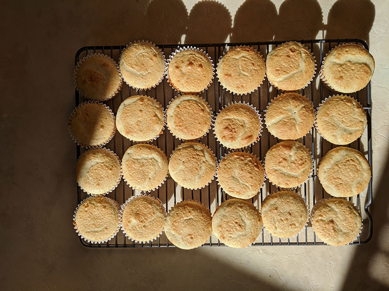

מתכון לקאפקייקס
מרכיבים:
3 כוסות קמח עוגה
1.5 כוסות קמח רגיל
3/4 כפית סודה לשתיה
250 גרם חמאה
1.5 כפית מלח
2 ורבע כוסות סוכר
5 ביצים שלמות
3 חלמונים
2 כוסות חלב
2 כפיות תמצית וניל
אבקת אפיה
אופן ההכנה-
מערבבים בקערה קמח + סודה לשתיה + אבקת אפיה + מלח
בקערה נוספת מערבבים סוכר + חמאה מוקצפת ואז מוסיפים ביצה אחר ביצה
מוסיפים לקערת המיקסר מקערת היבשים + חלב לסירוגין
מוסיפים את התמצית וניל ומערבבים הכל
מוזגים למנג'טים עד האמצע
אופים בתנור על 170 מעלות

לקרם:
2 שמנת מתוקה
רבע כוס סוכר
חצי חבילת אינסטנט פודינג וניל
ספר מתכונים במחיר השקה
100 מתכונים פשוטים להכנה בבית עם הילדים